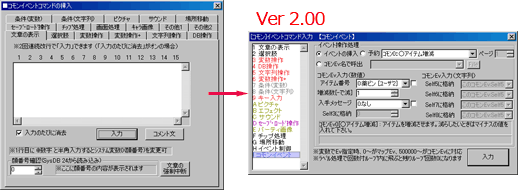
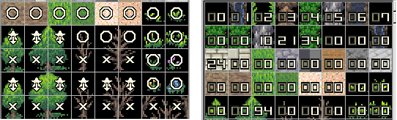
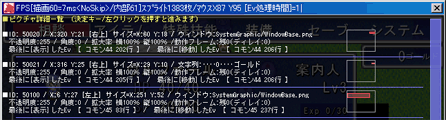

|
|||
|
（2013/08/09） Ver2.10 新たなコマンドを実装しました。 【新機能】 ・【新コマンド】 「ダウンロード」機能を実装しました！ インターネット上からファイルをダウンロードする機能です。 － ダウンロード先のデータをファイルとして保存できます。「保存しない」こともできます。 － ダウンロードした内容を「文字列変数」に直接格納することもできます。 － 「ダウンロード完了までイベント停止」チェックをオンにすると、完了するまでイベント待ちになります。 － 負荷対策の都合上、SilverSecond関連ドメインには使用できません（エラーが表示されます）。 ・【エディター設定】 「上級者向けコマンドを表示」 のオプションを追加。 「ダウンロード」機能を表示させるために設定するオプションとなります。 デフォルト状態ではオフになっています。超初心者さんの過失防止のための機能です。 ・【動作指定】 コマンドとオプションを追加しました。 － 「パターン4」「パターン5」「＜数値＞に高さを変更」コマンドを追加しました。 － 動作指定ウィンドウ内に「動作完了までウェイト」 のオプションを追加しました。 その「動作指定」コマンドが全て終わるまでイベント処理を停止できます。 （「→完了までウェイト」のコマンドと違い、その動作指定「だけ」が終わるまでの間、停止します） ・【ゲーム基本設定】 古いバージョンの仕様を維持したままにするオプションを付けました。 今のところ「最新版の挙動で動作」、「旧2.02時点の挙動で動作」が選択可能です。 ＞ 【2.02版 特殊文字】 \m[X]の320x240時の挙動が縦中央揃えになる。 【2.02版 変数操作+】 タグ取得時の座標がY方向に1マス上にずれている 【2.02版 文章・文字列ピクチャ】 文頭に何も文字がない状態での改行が無効になる 【2.02版 文章・文字列操作】 「キャンセル有」にしなくてもキャンセルが効く ・【変数操作+】 キャラクターの「アニメパターンID[0-4]」と 「移動中？[1=YES 0=NO]」を取得可能にしました。 ・【DB操作】 DBタイプ番号のオプションに、新たに「タイプ名取得」を追加しました。 ・【DB操作】 タイプの「名前」から「タイプ番号」の取得、データの「名前」から「データ番号」、 項目の「名前」から「項目番号」を得られるオプションを追加しました。 ・【システム変数】 システム変数112「[読]テストプレイ中？（1=YES）」を追加しました。 ・【ゲーム設定】 「ゲーム中の2バイト文字の言語」設定を試験的に追加してみました。 日本語・ハングル文字・中国語（繁体字）・中国語（簡体字） から選択できます。 私たちが使う場合は、日本語にセットしたままで問題ありません。 → どうもこれといって効果がないようなので、削除予定です。 ・【データベースウィンドウ】 検索機能を付けました。 「全タイプ」オプションの指定と、「数値」か「文字」の選択が可能です。 ・【コモンイベントウィンドウ】 右上の行数欄に数値入れてEnterを押すとその行にジャンプできる機能を実装 ・【暗号化】 暗号化処理を変更しました。最新版のエディターでゲームデータを作った場合は 最新のGame.exeで動作させるようにしてください。 また、過去の暗号化ゲームデータは最新のGame.exeでは動作しませんのでご了承ください。 【ゲーム部 仕様修正】 ・【特殊文字】 320x240環境で、\m[?]の縦位置が揃うよう修正。従来は320x240時だけ中央縦揃えでしたが、 「\m[16]\f[12]■\f[14]あ\f[16]い\f[12]う」と入れたときに下が揃うのが想定していた使い方です。 ・【変数操作＋】 指定座標のタグ番号の取得で、精密座標での内部取得座標が 上に半マス分（精密座標で1）だけずれていたのを修正。 ・【文章の表示・ピクチャ】 文字列の最初に入れた改行が反映されていなかった現象を修正。 ・【文章・文字列操作】 「キャンセル有」にしなくてもキャンセルが効いてしまう現象を修正 ※上記4点の修正は、ゲーム設定の「内部バージョン」を「2.02時点」にするとこれまでの仕様に戻せます。 想定していた処理と異なった場合は、ゲーム設定で「旧2.02時点の挙動」に変更してください。 ・【描画関連の更新】 最新ライブラリの導入により、描画速度が少し高速化したのと、 小さなアンチエイリアスフォントがきれいに描画されるようになりました。 ・【文字列操作】 文字列操作を1.5倍ほど高速化できました（処理時間35～45％カット）。 また特殊文字の優先順位がなくなり、無限の入れ子構造に対応しました。 ＜1万回ループで文字列操作を行った場合のイベント処理時間の違い＞ 【2.02a】 「ああああああああ」代入：245ms 「\c[1]あ\c[2]ああああ」代入：360ms → 【2.10】 「ああああああああ」代入：139ms 「\c[1]あ\c[2]ああああ」代入：238ms ・【文字列操作】 一文字切り出しで文章を壊さずに特殊文字を抜き取れるよう修正を試みました。 ※\A+なら「\A+」、\c[1]なら「\c[1]」分だけ抜き取ることができるようになります。 なお、\r[X,A]の特殊文字の場合は「\r[」だけを抜き取ります。 ・【ピクチャ操作】 ピクチャを削除したときの処理をほんの少しだけ高速化。 （メモリからの画像削除・ピクチャ削除処理） ・【キャラ描画】 キャラクターの高さが1以上の場合はチップの半透明処理が効かなくなるように修正 （これはジャンプ時にも適用されます） ・【F12 リセット】 テストプレイ中のみ、F12のリセットを行うとメモリ内のグラフィックを全て消去・ およびアイコンを再読込みするように修正。 （従来は初回起動時のみアイコンが読込されていたので、追加してもF12では反映されなかった） ・【サウンド】 「同じファイル」のSEが同時再生された場合、常に1つ分のSEしか鳴らなくなりました。 同じSEを複数同時再生することで音を大きくしていた場合などは修正が必要です。 （ライブラリの仕様変更による影響のようです） 【ゲーム部 バグ修正】 ・【文字列操作】 一行切り出しで、本来と違う場所で切れてしまうバグを修正 ・【文字列操作】 文字列の置換時、置換「先」の側の文字列に「@」が頭についていると、 その@がなくなってしまうバグを修正。 ・【文字列操作】 文字コードの影響で置換・消去がうまく機能しない場合があったバグを修正 ・【条件分岐（文字）】 文字コードの影響で「～を含む」の分岐がうまく機能しない場合があったバグを修正 ・【DB操作】DBのCSV読み込み処理にバグがあったのを修正 （フォーマットによっては１列目のデータが読み込めなくなる） ・【DB操作】 変数を間接呼び出しにして「÷=」 「％=」を使うと間接呼び出しにならなかったバグを修正 ・【DB読込】 DBからの文字列読み込み時、その文字列中の特殊文字や改行コードが 変換されていなかったバグを修正 （条件分岐[文字列]などで問題になります） ・【DB操作】 「項目名取得[文字]」で\udb[A:B]などが取得できなかったのを修正 ・【DB操作】「DBからCSVに書き出す」とき、データ数より大きな数字を指定するとエラーが出るバグを修正 ・【変数操作＋】当たり判定■にチェックが入っていない状態のイベントが存在するマスに対して 「精密オフ」で「通行可能(ﾀｲﾙ･Ev両方)」を取得すると0(通行可能)を返すバグを修正 ・【変数操作+】 「マウス座標のEvID」で、X座標の境界上（X座標0、16、32など）にカーソルがあると、 イベントなし(-1)と認識されてしまう不具合を修正 ・【変数操作+】「イベントの一時消去」を実行後、消去したイベントの位置に、変数操作＋による 対象位置のイベントIDを取得すると消去したはずのイベントIDが取得できるバグを修正 ・【ピクチャ】 自由変形ピクチャで、「スクロールとリンク」にチェックを入れていても、 マップにリンクしないバグを修正 ・【ピクチャ】 非常に特殊な条件下で起きる文字列ピクチャが原因のフリーズバグを修正 ・【サウンド】「BGS停止」にフェードを設定すると、システムDBに登録している 特定のBGMが再生されなくなるバグを修正 ・【サウンド】 「システムDBから直接選択」のSE指定で「(停止)」を選び 「再生を遅延させる」で1以上の数値をを指定するとDBエラーが出るバグを修正。 ・【フレームスキップ】 ロード処理でフレームスキップが変更されないよう修正。 ・【マウス座標】 ゲーム画面サイズが800*600のとき、システム変数71および72番の 「マウスX座標・Y座標」に数値を代入し続けるとマウスポインタが右下に向かっていくバグを修正 ・【動作指定】 ロード時、「動作指定」の移動時アニメ・待機時アニメ・不透明度・移動速度・ 移動頻度・アニメ頻度が記憶されていなかったのを修正 ・【リセット処理】 F12でタイトルに戻った際、それまで再生していたMIDI・OGGの 音声がかすかに再生され続けることがあるバグを修正（たぶん） ・【マップ設定】 「遠景」を「ファイル名指定」にしたマップに何度も移動するとエラーが出るバグを修正 ・【マウスカーソル】 画面をウィンドウモードからALT+ENTERで全画面モードにした時 マウスカーソルが非表示になってしまうバグを修正 ・【特殊文字】 「\.」を使用すると、文章の最後まで行っていないのに 決定キーで終了できてしまう場合があるバグを修正 ・【マップ】 特定条件下でマップチップが二重に描画されていたバグを修正 ・【イベント接触】並列指定の動作指定で、プレイヤーが拡張されたイベント接触範囲内に入っても 起動しない現象を修正 ・【デバッグ機能】 F8のデバッグデータ内、『読込スプライト』の文字表示位置がずれていたのを修正 ・【システム変数】 Sys71、72のマウス座標において、フルスクリーン後F4を押すと 内部的にウィンドウ拡大率が変わってマウス座標が狂っていたバグを修正 ・【ゲーム音声】 ゲームを閉じてもまれに音声が流れ続ける現象に気休め対策 ・【変数呼び出し値】 変数呼び出し値で主人公の影を変更しても反映されなかったのを修正 【エディター部 仕様修正】 ・【変数操作・文字列操作】 変数名を設定したとき、すぐコマンド一覧画面が更新されるよう修正しました。 ・【条件分岐(文字列)】 変数入力欄に変数呼び出し値を入れたとき、コモンセルフ名が表示されるよう修正。 ・【英語版対応】 英語用DLLファイルを入れると、エディター部を英語に変更できるようになりました。 （英語用DLLはこれから準備していきます） ・【ウィンドウ】 マップイベントウィンドウ・コモンイベントウィンドウのサイズを記憶するよう修正 ・【データベース】 メモ欄にスクロールを追加 ･【タイル設定】 説明文に「※ ○×、★、▲、□設定時にCtrlを押しながらで↓属性を同時に～」 とあったが、○×の設定時にCtrlを押ながらクリックしても意味がなかったのでその部分を削除 ・【イベントウィンドウ】 「半歩上に設置」オプションが1ページ目の分しか機能しなかったので それ以外のページの場合はロックをかけるよう修正。 【エディター部 バグ修正】 ・【コメント】 修正時に内容を空にしたとき、そのコメントが消えずに上に増えるバグを修正。 修正時に、そのコメントが消えるようになりました。 ・【変数操作】「変数名の設定」に設定されている「コモンセルフ名」が表示されていないバグを修正 ・【サウンド】 ファイル選択時の不透明度が異常な値になるのを修正 ・【キー入力】 「特定キーのみ」でスペースキーの番号にしても<非対応>となるバグを修正 ・【キー入力】 「キー入力受け付け」のキーボードの「特定キーのみ判定」でキーコードが間違っていたのを修正 ・キーコード183 【テンキー +】→【テンキー .】 ・キーコード283 【Pause】→【PrtSc】 ・【DB操作】 特定条件下でタイプを切り替えるたびに「パラメータが間違っています」と表示される現象を修正 ・【条件分岐】 「データを呼ばない」にチェックして200万などの数値を入れると、 次に開いたとき「数値」でなく「変数」が選択されているのを修正 ・【ピクチャ】 自由変形で「移動」コマンドを入力したとき、コマンド一覧に本来機能しない角度・拡大率が 表示されてしまっているバグを修正（自由変形コマンドでは内部の角度・拡大率は変化しません） ・【場所移動】 登録位置（システムDBから）を指定したものを編集すると、 場所移動時オプション（トランジションの設定）の部分が空白になるバグを修正 ・【場所移動】 マップデータのない場所を選ぶとたまにメッセージウィンドウが 画面の裏側に行ってしまい、見えなくなる現象に対応。 今後は場所移動ウィンドウのタイトルバーにエラー文が表示されるだけになります。 ・【データベース】「データ内容の特殊設定」で、エンターを押して手動選択肢が追加される条件を フォーカスが「表示文字列」か「内部値」にある時のみに限定 ・【コモンイベント】 イベント呼び出しコマンドの文字列入力の欄に 255バイト以上の文字列を入れると強制終了するバグ修正 ・【コモンイベント】 文字列の入力指定において「文字列の手動入力」を使うと、内部的に コモンセルフ5が使用されていることになってしまうバグを修正 （ただし、これが反映されるのは今後新たに入力したものに限られます） ・【コモンイベント】 数値入力・文字列入力が一つもないコマンドを編集すると、「結果」が指定されていても 「<どこにも代入しない>」に変わってしまうバグを修正 ・【入力欄】 ピクチャの自由変形欄で日本語変換が自動オフにならなかったのを修正 ・【コモンセルフ】 「DB操作」の下側のボックス、「変数操作＋」の各種ボックス、 「条件（変数）」の右辺のボックス、「エフェクト」の各種ボックス、「コモンイベント呼び出し」 にコモンセルフの呼び出し値を入れたときにコモンセルフ名が表示されるよう修正 ・【変数呼び出し値】 変数呼び出し値の範囲が正確でなかったのを修正。 例：1100540 を入れると【このEvのセルフ変数0】と出てしまう、など ・【マップ描画・元に戻す】 新しいマップを作ってマップに変更を加え、「元に戻す」を押すと 以前に編集していたマップがそのまま描かれるバグを修正 ・【ファイル選択】ファイル選択ウィンドウにて、ファイルがファイル名順に並んでいなかった現象を修正 ・【イベントエディタ】 スペースキーで特定条件下の条件分岐などを修正すると強制終了するバグを修正 ・【イベントエディタ】 条件分岐やループの先頭を左クリックしたまま右クリックをすると 開始文を消すことができるバグを修正 ・【イベントエディタ】 左クリックしながらスペースを押してコマンド修正すると条件分岐などが壊れるバグを修正 ・【コモンイベントエディタ】 コモンイベントをコピー → 貼り付け後にCtrl+Shift+F6で コモンイベントを挿入するとコモン番号がズレるバグを修正 ・【セルフ変数使用状況】 ○と■を表示するテキストエリアの余裕を拡張。 ・【データベース】 「タイプの設定」の【データ追加時の注意】が不要になったので削除。 （現在は変数や文字列項目を追加・削除すると、それに合わせて 入力データもずれるようになってます） ・【イベントウィンドウ】 「次チェックPへジャンプ」しても右上の行数が変化しないバグ修正 ・【イベントウィンドウ】 長いデータを「クリップボード→コード貼り付け」張るとエディタが強制終了するバグ修正 ・【ゲームの基本設定】 キャラの移動速度を0未満に設定すると問題が起きるバグを修正。 ※0以下の値を入れたときは自動的に「1」の値が入るようにしました。 ・【タイル設定】 TileSetData.datの容量が1MB前後になるとエラーが出るバグを修正 また、チップが存在しない部分のデータを初期化するように修正 ・【マップ選択ウィンドウ】 マップ削除時、Shiftを押しながら行うマップの「ファイルごと削除」が 正常に機能していなかった不具合を修正 |
|
（2012/06/10） Ver2.02a 新機能のバグだけ取り急ぎ修正しました。 【ゲーム部 バグ修正】 ・【文字列操作】 「指定文字以降を切り出し」の切り出し後の文字列に、指定文字列の2文字目以降が 残ってしまうバグを修正 （例：「あいうえお」から「いう」以降を切り出すと「うえお」になっていたバグ。正しくは「えお」のみ） |
|
（2012/05/13） Ver2.02 バグ対応が中心です。 【新機能】 ・【システム変数】 システム変数42「ｷｰﾎﾞ入力文字ｱﾝﾁｴｲﾘｱｽ[0無/1有/+2でｴｯｼﾞ付]」を実装 アンチエイリアスやエッジの有無の変更をすることができます。 ・【ピクチャ】 「クリア」ボタンを追加。パラメータをリセットできます。 ・【文字列操作】 「指定文字まで切り出し」「指定文字以降を切り出し」を実装 テキストのスクリプトを実装するときなどに使えると思います。 【ゲーム部 仕様修正】 ・【イベント制御】 コモンイベントを「一時消去」しようとした場合にエラーが出るよう修正 ・【特殊文字】 \r使用時、ルビの分だけ文字表示が高速に進んでしまう現象をある程度緩和 ・【移動】 マップ移動で斜め移動している場合に、1マスの隙間に侵入しやすくなる処理を追加。 （従来は斜めを押して移動していると、左右方向に伸びる1マスの道に侵入できませんでした） 【ゲーム部 バグ修正】 ・【変数呼び出し値】 9100000+10*Y+X → イベントYの座標を取得or入力 において、以下の内容を設定する処理に不具合があったのを修正。 X=6：方向（1～8） X=9：キャラチップのファイル名（文字列変数） ・【エフェクト】 1フレーム以上のピクチャエフェクトが、消去されかかっているピクチャに対して 機能しなかったバグを修正 ・【コモンイベント】 500階層以上呼び出そうとするとエラーが出る処理が機能していなかったので修正 ・【キー入力】 「押されるまで待つ」のとき、押したキーが変わるとリピートを解除する処理を追加 ・【キー入力】 決定・キャンセルと方向キーがリピート可能なとき、交互にリピートしてしまう現象に対策 ・【DB操作】 コモンイベント内で、存在しない項目を名前呼び出ししたときにエラーが出ないバグを修正 ・【選択肢】 イベントコマンドの選択肢で内容を特殊文字だけにすると、 実行したときに選択できない空欄ができてしまうバグを修正。 （全ての内容を特殊文字だけにすると強制終了するバグも修正） ・【チップ処理】 「チップセットの切り替え」を実行した際、 マップチップの8番から15番（オートタイル後半）が正常に切り替わらないバグを修正 ・【マップ】 マップが「縦方向にループ」もしくは「縦横両方にループ」に設定されていると、 イベントの影が縦に伸びるバグを修正 ・【サウンド】ＭＩＤＩ再生時に「BGMの停止」で長いフェードを入れると一瞬音が大きくなるバグを修正 ・【システム変数】 F4で画面拡大時、システム変数71、72にマウス座標を代入すると 画面の外にカーソルが飛んでいくバグを修正 ・【全画面処理】 Alt+Enterだけでなく、Alt+Zなどでも全画面になってしまうのを修正 ・【ピクチャ】 グラデーション<GRADX><GRADY>の機能でR値だけ少し増えてしまっていたバグを修正 ・【移動】 斜め移動を押している時、従来は上下の1マスの隙間に入れて 左右の1マスの隙間に入れなかったが、新しく入れる場所があったら そちらの方角を優先して入れるよう修正。 ・【セーブ・ロード処理】 ロード時にBGSがそのまま再生され続けるバグを修正 ・【エフェクト】 ピクチャのシェイクを0フレームで2回以上行うとフリーズするバグを修正 （内部的には1フレームとして処理されます） ・【動作指定】 複数ページのイベントで、動作指定にてグラフィック変更を行ってセーブし、 ロードすると、変更したグラフィックが元に戻ってしまう不具合を修正。 【エディター部 バグ修正】 ・【データベース】 何らかの原因によりデータベースのタイプ数が0になった際、 エディタが起動できなくなるバグを修正 ・【データベース】 特定の操作によってタイプ数が100を超えるバグを修正 データ数が10000を超えるバグを修正 ・【データベース】 何らかの原因によりデータベースのタイプ数が0になった際、 エディタが起動できなくなるバグを修正 ・【データベース】 特定の操作によってタイプ数が100を超えるバグを修正、データ数が10000を超えるバグを修正 ・【データベース】 タイプ設定で項目を追加した場合、その分だけデータもズレるように修正。 また、初期値も格納されるよう修正。 ・【データベース】 ファイルを読み込んだときに毎回データ０番に戻っていたのが、これからは 元のデータ位置を指したままになるよう修正 ・【データベース特殊設定】 選択肢手動選択肢フォーカス時、選択肢作成時に、 Enterを押すと挿入、Ctrl+Spaceで読み込みできるように修正。 ・【データベース】 DBタイプ設定の「データIDの設定方法」で、読み込み先が ループしてしまった場合に強制終了するバグを修正 （10回以上呼び出しが続くと<<ERROR>>になります） ・【場所移動】 「移動先を見ながら指定」時、まだ作られていないデータ（名前が空）を 開こうとすると強制終了するバグを修正 ・【コモンイベントエディタ】 条件[文字列]で条件を「と同じ」以外にした場合、 セルフ変数使用状況で「未使用」のままになっていまうバグを修正 ・【デバッグウィンドウ】 タスクバーが左または上にある場合もデバッグウィンドウが ゲーム画面に重ならないように修正 ・【ウィンドウ表示】 環境によってイベントウィンドウ・イベントコマンド挿入ウィンドウの 右下部分が表示されなくなる問題に対応（たぶん） ・【コモンイベント】特殊入力の選択肢入力でEnterなどのショートカットが有効になるよう変更 ・【パーティ画像】 特定条件で修正すると、画像の指定のラジオボタンが両方オフになる、または特殊処理が 未選択の状態になり、そのままOKを押して入力すると強制終了してしまうバグを修正 ・【イベント】 イベントエディット時、1行の内容が長くなると強制終了するバグを修正。 長いコモンセルフ名が複数現れる場合などに発生、文字数を制限しました。 ・【コモンイベント】 コモンセルフ名に長文の名前を入れるとコモンイベントが破損することがあるバグを修正。 ・【データベース・変数名】 極端に長い名前の変数・データ名を作ると強制終了して起動できなくなるバグを修正 |
|
（2011/12/01） Ver2.01 2.00で発生した、強制終了問題へのバグ対応が中心です。 【新機能】 ・【変数呼び出し値】 9100000+10*Y+X → イベントYの座標を取得or入力 において、以下の内容を設定できるようになりました。 X=6：方向（1～8） X=9：キャラチップのファイル名（文字列変数） → 完全ではなかったので、次回再修正を行います。 【ゲーム部 バグ修正】 ・【イベント描画】 キャラが画面上端でジャンプしたときに、一部状況で影の表示がおかしくなるバグを修正 ・【イベント描画】 スクロールによって画面端のイベントが見切れた時、表示座標が1ピクセルずれるバグを修正 【エディター部 仕様変更】 ・【パーティ画像】 歩行グラフィックのファイル名を直接読み込む方の入力欄が常に灰色だったのを、 入力可能時には直接入力できるように修正 ・【オートタイル】解像度640x480以上の時、横32x縦160（800x600時は40x200）のオートタイルを配置すると、 エディタ上で空チップとして表示されてしまうバグがありました（一部環境のみ）。 現状の修正が困難なので、起動後の最初の一回だけ警告を表示するよう対応しました。 → どうしても表示されない場合は、アニメ2枚のオートタイルにしてみてください（横64x縦160など） 【エディター部 バグ修正】 ・【マップ選択】 マップ名が設定されていないマップに「新規マップ作成」すると フリーズするバグを修正 ・【ピクチャ】 表示タイプを[4]お手軽ウィンドウにした時に、ファイル名を入力する エディットコントロールが上下キーとマウスホイールの入力に反応するバグ修正 ・【データベース】 データ名を非常に長くした場合、イベントコマンドの変数呼び出し値やDB操作で 該当のデータを呼びだそうとするとフリーズするバグを修正。 ・【ゲームデータ作成】 コピーされない拡張子のファイルもコピーされてしまうバグを修正 |
|
（2011/10/27） Ver2.00 生まれ変わりました！ 大量の機能拡張＆インターフェース大幅向上です。 ※はじめてのウディタWiki「ウディタ2.00に迫る」（新ウィンドウ）にて、動画入りで 変更点を紹介してくださっていますので、そちらも参考になると思います。 【 Ver1.31からの仕様変更のお知らせ 】 ＜動作自体には大きな問題がない仕様変更 / 削除される機能＞ ・【ピクチャ】 「ピクチャ消去」時の「カラー」は、今後は自動で「同値」になります。 もし消去時の色に関わる演出で「カラー」をご利用の場合は、以下の対応をお願い致します。 - 消去処理の前に、「ピクチャ移動」で一度色を設定して、その後「消去」する - 「画面処理」コマンドのピクチャエフェクトで、指定カラーと同じ色調変更を指定する （こちらの方が簡単です） ・【通行設定(対応不要)】 ★・▲の通行設定変更 → デフォルトでは下レイヤーに依存しなくなりました。 従来は、ただの【▲・★】の下に【×】の通行設定がある場合は下レイヤー依存で 通れない仕様でしたが、今後は通行可能にします。（つまり同じレイヤーの通行設定を優先する） ※上記のような状況で通れなくしたい場合、今後のバージョンでは 【★・▲】に、「下のレイヤーに合わせる【↓】」属性を付与してください。 → ちなみに、古いタイルセット設定を読み込むと、自動的に【▲】【★】に【↓】が付与されますので、 この修正による対応は不要です（ただし、今後設定する際はご注意ください）。 このため、古いバージョンのゲームも、最新のGame.exeでそのまま問題なく動作すると思います。 ・【合成音声（削除）】 合成音声DLLのライセンス有料化に伴い、合成音声機能を削除しました。 従来のDLLをお持ちの方でしたら、本体2.00より前のバージョンで合成音声を 再生することができますが、今後はサポートいたしませんのでご了承ください。 ・【イベント挿入[名]の.common読み込み（半削除）】 安定動作が困難であることが判明いたしましたので、 この機能のサポートを一度打ち切ります（機能は消さないので、もし正常動作するならご利用下さい）。 なお、テストプレイ時のみ、.commonファイルを読み込むと、一回目に警告文が出ます。 ＜対応が必要な仕様変更＞ ・【文字サイズの変更】 一部の英字フォントやメイリオフォントなど、従来では設定したフォントサイズより 小さく表示されていたフォントが、今後は「入力サイズ通り」に表示されます（DXライブラリの仕様変更）。 サイズ修正が必要な場合は、お手数ですが手動で対応してくださいますよう、お願いいたします。 ・【特殊文字の限定条件下での変更】 ゲーム基本設定でフォントのｱﾝﾁｴｲﾘｱｽを「無し＆倍角」にしたとき、 特殊文字\mx、\myに設定した値が、想定の2倍の座標で処理されていたバグを修正しました。 アンチエイリアスを「無し＆倍角」にしていた場合は、修正が必要になりますので、お手数ですが 手動で対応してくださいますよう、お願いいたします。 ・【文字列操作】 「\>」を含む文章を文章の上から1行切り出しで切り出したり、1行コピーした場合、 「\>」が改行として認識されて、そこまでしか切り出されなかったバグを修正しました。 このバグに合わせて処理を作っていた場合は、お手数ですが 手動で対応してくださいますよう、お願いいたします。 ・【30FPS時のエフェクト時間】 処理FPSが30FPSの場合、ピクチャエフェクト全てのフレーム指定において、 エフェクトにかかる実時間がこれまでの「半分」に変わりました。 （30FPSなら30フレーム＝1秒だったのが、今後は30フレーム＝0.5秒になります）。 ・【エフェクト】 「画面スクロール」コマンドで「移動完了までウェイト」したとき、 全イベントがウェイトされる仕様だったのを、該当イベントのみウェイトされるように変更。 【 新機能 】 演出機能・内部処理・インターフェース面のどれも大幅強化されました。 ・【イベント挿入ウィンドウ】 3段タブ選択式からリスト選択式に変わりました！ イベントの種類を、これまでの3段タブから、リストボックスで選べるようになりました。 また、「エディターオプション」から、コマンドの並び順やショートカットキーの設定が可能です。  ・【イベント挿入ウィンドウ】 一部のイベントコマンドの名前を変更しました - 画面処理 → エフェクト - キャラ画像 → パーティ画像 - その他1（キー受付のみ） → キー入力 - その他1 → イベント制御 - その他2 → コモンイベント ・【マップチップ】 オートタイルが15種類まで設定可能になりました（従来は7種類まで）。 ・【エディターオプション】 エディターのメニューに「オプション」→「エディターオプション」を追加。 今のところ、以下の項目の設定が可能です。 - 「マップ表示時の下レイヤーの暗さ」 - 「エディット時の遠景表示のON/OFF設定」 … 重い場合はオフにしてください。 - 「マップ編集時のイベントレイヤー不透明度」 … レイヤー1～3編集時のEvレイヤーの不透明度です。 - 「イベントコマンド挿入ウィンドウ設定」… コマンド並び順の変更 ＆ ショートカットキー設定。 - 「イベントコマンドの配色」…標準の【タイプ1】と、赤・緑色不使用の【タイプ2】があります。 タイプ1で見にくい場合はタイプ2にしてください。 ・【起動画面】 スプラッシュウィンドウの追加 機能の修正によってエディタの起動にやや時間がかかるようになったので、 起動時にスプラッシュウィンドウを表示するよう修正。 ・【マップ・イベント操作時 ショートカットキー追加】 ショートカットキーを実装しました。フォーカスが当たっている場所に応じて機能が変わります。 ・【メインウィンドウ】 - 1～4＝レイヤー変更 （1～3＝レイヤー1～3 ・ 4＝イベントレイヤー） ・【イベントコマンド挿入ウィンドウ】 - Ctrl+Enter（コマンド挿入） → 全部のコマンドに実装 - Alt+↑↓（選択中のイベントコマンド種類を切り替え） - Alt+1～9、A～Z イベントコマンドショートカットキー ・【イベントウィンドウ＆イベントコマンド挿入ウィンドウ】 - Ctrl+S（マップまたはコモンイベント・データベース保存） - Ctrl+T または F9（テストプレイ） - Ctrl+↑↓ （イベントコマンドのカーソル位置を上下に移動） - Ctrl+Alt+↑↓ （読み込むマップイベント、コモンイベント番号の変更） - Ctrl+R 「直前にいじったイベント/コモンイベントへ飛ぶ」 - Ctrl+Space 選択中のイベントコマンドを修正 ・【データベースウィンドウ】 - ↑↓（DBの項目を移動） - Ctrl+↑↓（DBのデータ位置を上下移動） - Ctrl+Alt+↑↓（DBのタイプ位置を上下移動） - Tab（下部テキスト編集ウィンドウへジャンプ/直前に選択していた項目の位置へジャンプ） ・【マップ/コモンイベントエディタ】 チェックPに「特」モードを追加。 チェックを入れると、普段使ってるのとは別のチェックポイントを設置・検索することができます。 開発中の最新の場所にだけ入れるなど、特別な場所にご利用ください。 ・【マップ/コモンイベントエディタ】 マップ/コモンイベント一覧に、右クリックメニューを追加。 - イベントに対して「切り取り・コピー・複数コピー（※コモンイベントのみ）・貼り付け・削除」が 可能になりました。 - コマンドに対して「切り取り・コピー・貼り付け・削除・特殊コピー×2・特殊貼り付け」が選択可能に。 ・【コモンイベントエディタ】 コモンセルフ名の一括設定 ＋ 一括コピー機能を追加 「コモンセルフ使用状況」からコモンセルフ名全ての名前が変更可能になりました。 また、コモンセルフ名の「全部コピー」・「全部貼り付け」・「空欄にだけ貼り付け」機能を実装しました。 ・【コモンイベントエディタ】 コモンイベントのドラッグ＆ドロップで読み込み可能に。 コモンイベントファイル（～～.common）をコモンイベントウィンドウに ドラッグ＆ドロップするだけで、コモンイベントの登録が可能になりました。 ・【コモンイベントエディタ】 コモンの「特殊設定」を行ったとき、コモンセルフ名にも自動的に 特殊設定の「入力」名を格納するよう修正（そのコモンセルフ名が空白の場合のみ） ・【イベントエディタ】 イベントコマンド欄の新たな機能として、以下の五種が搭載されました。 （右クリックメニューに搭載） ・【選択範囲の先頭へジャンプ】 ・【選択範囲の最後尾へジャンプ】 範囲選択された部分の、先頭部分ないし最後尾へ移動します。 長い条件分岐をクリックしてこのコマンドを使えば、始まりと終わりの部分をすぐ見つけられるでしょう。 ・【コマンド文をクリップボードへコピー】 書いてある「コマンド文」を、Windowsのクリップボードへそのままテキストとしてコピーします。 そのままメモ帳などで「貼り付け」すれば、コマンド文を貼り付けることができます。 ・【イベントコード→クリップボードへコピー】 選択コマンドを、ウディタ用イベントコマンドとして処理できる形の テキストデータとしてWindowsクリップボードにコピーします。 ・【クリップボード→コード貼り付け】 Windowsのクリップボードに入っているテキスト情報を、ウディタ用イベントコマンドとして貼り付けます。 テキストのフォーマットさえ正しければ、ブラウザやメモ帳などからコピーしたコードでも貼り付けできます。 ただし、内容をいじって想定されていないパラメータにしたりすると、正常に処理できなくなります。 → 【※貼り付けられる「コード」の例】 （以下のWoditorEvCOMMAND_START～ ～ENDまでをコピーすると、 ウディタの【クリップボード→コード貼り付け】でそのままイベントコマンドとして貼り付けられます。 行の先頭に空白があってはいけません）
・【データベース】 「データのCSVファイルの読み書き機能」を実装 Excelなどで作成したCSVファイルを、データとして読み込むことができます。 （CSVファイル＝Excelなどで読み書きできるカンマ区切りのデータファイル）。 タイプとしては読み込めませんのでご注意下さい、 すでにタイプ設定されているところへ、データを読み込むためのものです。 <CSVファイルの具体例> ※ウディタで出力されたCSVファイルをメモ帳で開くと、以下のような形式で書かれています。
項目間は「,」で区切る必要があります。 １つのデータが終わったら、「改行」を入れてください。 ■上の例だと「ウルファール」などの文字列データを「" "」で囲んでますが、 文字列に「"」や「,」が含まれていない場合は、付けなくても問題なく動作します。 たとえば、ExcelでCSVファイルを作ると、必要な場合だけ" "で囲んでくれます。 ・【データベース】 タイプ・データ欄に右クリックメニューを追加 「切り取り・コピー・複数コピー・貼り付け・削除」機能を選択可能。 また、特別な機能として、それぞれ以下のものがあります。 - タイプ欄 … タイプ設定をファイル出力 ・ タイプ＆全データをファイル出力 - データ欄 … データをファイル出力 ・データをCSVﾌｧｲﾙとして出力 ・【データベース】 ドラッグ＆ドロップによるデータベースファイル読込機能 データベース用のタイプ･データファイルをウィンドウにドラッグ＆ドロップすると、 そのファイルを読み込みすることができるようになりました。 （これまで「読み込み」ボタンを押してファイルを選んでいた操作を飛ばすことができます） ・【データベース】 テキストボックスへのドラッグ＆ドロップによるファイルパス入力機能搭載 テキストボックスの項目にファイルをドラッグ＆ドロップすると、 そのファイルアドレス（「～\Data」以後のパス名）を入力できるようになりました たとえばファイル「C:\Woditor\Data\Graphic\AAA.png」をドラッグしてテキストボックスに ドロップすると、そのテキストボックスには「Graphic\AAA.png」が入力されます。 ・【ゲーム基本設定】 移動速度の細やかな設定が可能に。 主人公/イベントの移動速度の7段階の速度を、それぞれ手動の値で設定できるようになりました。 ・【ゲーム基本設定】 画面サイズに「800 x 600」を追加 使用チップサイズが「40x40ピクセル」という、なかなか珍しい仕様になってしまいますが、 ゲームを全てピクチャで処理する前提ならオススメです。 ※ただ、60FPSで動作させようとすると重いかもしれません。 ※2011/10/03 ： 800x600時の文字列の改行間隔が1.25倍になっていたバグを修正しました。 ・【ゲーム基本設定】 ゲーム名に「追記」を設定することができるようになりました。 この部分には、バージョン番号などを記述できます。 この追記部分は、変更されても、従来のセーブデータがそのまま使用できます。 ※従来は、タイトルのメイン部分を変えると、過去のセーブデータが別ゲームのものと 認識されてしまう問題があり、タイトルにバージョン番号を付与することなどができませんでした。 この機能は、その問題に対処するために実装されました。 ・【マップ選択】 右クリックメニューを追加しました。 - 新規マップ作成 → 選んだマップの「子」として新規マップを作成します。 - マップのコピー - マップの貼り付け → 選んだマップの「子」としてコピー。マップファイルも別ファイル名でコピーされます。 （Test.mpsをコピーするとTest_2.mpsになる。最大で～_9.mpsまで付く） - マップの削除 → 選んだマップの、マップファイル（mps）も削除するか聞いてきます。二度と復旧できません。 - 親側へ移動 [Shift + ←] … 選択中のマップの、ツリー内位置を移動させます。 - 子側へ移動 [Shitf + →] - 上へ移動 [Shift + ↑] - 下へ移動 [Shift + ↓] ・【タイルセット設定】 新しい通行設定タイプ「下のレイヤーに通行設定を合わせる【↓】」の実装。 通行設定を下のレイヤーに合わせることができます。★・▲・□と併用することができます。 ・【タイルセット設定】 使い勝手が全体的にアップしました。 - 記号に黒枠が付いて、見やすくなりました。 - 通行設定は、マップのように[○・×]・[★・▲]・[↓･□]から選んで塗る方式になりました。 - タイルのIDが、従来の0～9の範囲から、0～99に拡張されました。  ・【F7 ピクチャ詳細情報の一覧機能】 テストプレイ中、F7キーで、各ピクチャ番号の以下の情報を一覧表示することができます。 「ピクチャ番号、座標・タイプ(通常、文字列、ｳｨﾝﾄﾞｳ・自由変形)・ﾌｧｲﾙ名/文字列内容・ 不透明度・角度・残り動作フレーム・最後に[表示]したイベント、最後に[移動]したイベント」 それと同時に、おおまかな表示位置も表示されます。デバッグに有用なはずです。  ・【F8 デバッグ表示】 F8のデバッグ表示に、現在起動中のEv・処理行数を表示する機能を追加。 呼び出したイベントは、どういう経路で呼び出されたか全て表示されます。 ・【デバッグウィンドウ機能】 テストプレイ時のみ、デバッグメッセージを表示できる欄がゲーム画面横に表示されるようになりました。 - 通常プレイ時には、デバッグメッセージ処理は「コメント文」として扱われますので、 配布時にデバッグ文を消さなくても、問題なく公開することができます。 - ゲーム内でエラーが発生した場合、そのエラー文もデバッグウィンドウに表示されます。 - メインメニューの「テストプレイ」横にあるボタンでウィンドウを出さないように設定することができます。 - 「ゲーム画面側で」 F3キーを押すと、デバッグウィンドウの内容をテキスト出力できます。 ・【文章の表示】 「デバッグ文」 「（デバッグ文）全消去」機能を追加 上記デバッグウィンドウにメッセージを追記、または消去するための機能です。 なお、メッセージの最後には、デバッグ文の追跡を容易にする目的で、 「MapEv番号/コモンEv番号/行数」が自動付加されます。 ※「デバッグ文の全消去→デバッグ文」を連続で行うと、リアルタイムに表示が変わるように見えます。 ※当然ですが、同じフレーム内で「デバッグ文→全消去」という順で処理してしまうと、 全部消去されて何も表示されませんのでご注意下さい。 ・【文章の表示】 イベントコマンドの「修正」時、「文章」と「コメント」「デバッグ文」を切り替え可能に。 ・【変数操作 ・ 文字列操作ショートカットキー】 変数名の設定が楽になりました。 「変数名の設定」にて、「文字入力欄」にカーソルが当たってる状態で、 以下の操作が新たに可能になりました。 - 上下キー … 名前を変えたい変数を切り替える - Enterキー … 名前を設定 ・ 「名前を付ける」ボタンを押したのと同じ - Shift + ↓ … 対象変数の名前を名前欄にコピー 「↓コピー」ボタンを押したのを同じ ・【キー入力】 再編成 ＋ 新コマンド【自動キー入力】【キー入力の許可/禁止】の実装 これまでの、【その他1】の「キー受け付け」を「キー入力」コマンドへ移動しました。 また、新たに以下の2コマンドを新たに実装しました。 -【キー入力受け付け】 キー入力受け付け機能に「マウス」取得機能を追加。 マウスクリックが行われるまで待つ、といった処理も可能になりました。 -【自動キー入力】 「次のフレーム」のキー入力として、「決定・キャンセル･サブ・移動キー」 「指定したキーボードのキー」「マウス左・中・右クリック・座標」を自動で押すことができます。 これによる入力は、次に述べるコマンドで「禁止」したキーでも、入力受付可能です。 ※この機能の使用例としては、リプレイ機能を作りたいときや、ゲームのデモ画面を作りたいとき、 RPGをマウスでも操作させたいとき、などに利用可能です。 -【決定・キャンセル･サブ・移動キー / 入力デバイス、の許可・禁止機能】 コマンドを追加 「決定・キャンセル・サブキー・上下左右」、および、「キーボード/マウス/パッド入力」の それぞれの許可・禁止状態を切り替えることができます。 ・決定・キャンセル・サブ・上下左右に関しては、 「常に受け付ける(ﾃﾞﾌｫﾙﾄ)」 「移動時禁止・キー入力時だけ許可」 「移動時もキー入力時も禁止」 の設定が可能です。たとえば主人公のマップ移動だけ禁止したいときは、 「上下左右」の「移動時禁止・キー入力時だけ許可」にすることで実現できます。 ・「入力デバイス」では、「キーボードの各キー（1つずつ設定可）」・「マウス全部」・ 「パッド全部」・「全てのデバイス」の入力を許可・禁止にできます。 ・【DB操作】 ゲーム中のCSVファイル読み込み・保存機能 「ゲーム中」に、データベースの内容をCSVファイルへ保存する機能、および CSVファイルからのデータ読み込み機能を搭載しました。 ユーザDBを上書きすることも可能ですが、「データ名」を「名前呼出」してる場合は挙動がおかしくなります。 高速化のために、データ名とデータ番号のひも付けは、ゲーム開始時に一括して行っているためです。 ・【サウンド】 MIDIの「キー」変更機能 MIDI再生時に限り、「ループ位置」の代わりに「キーの上下」が設定できるようになりました。 キーを上げると音が高く、キーを下げると低くなります。微妙な雰囲気のチューンに最適です。 ・【サウンド】 OGG・MP3ファイルの「LOOPSTART」タグ（ループ設定）の反映 ループ位置を「0」にして再生した場合に限り、OGG・MP3ファイル内に含まれる LOOPSTARTタグ（※ファイルの先頭2KB内にある場合のみ）を自動で読み込み、 その時間をループ開始位置として自動設定する機能を搭載しました。 ※ただし、「LOOPLENGTH」は読み込まれませんので、ご了承下さい。 ※MP3の場合でも、作曲者情報など、文字を格納できるところのどこかに、 「LOOPSTART=123456」 と言う文字列が含まれていれば動作します。 ・【ピクチャ】 全面的に使い勝手をアップさせました。 - 「カラー」に変数を使えるようになりました。 - 「拡大率」の縦横別々指定が可能になりました。 （従来、引き延ばして描画していた部分を、代わりにタイル状に並べて表示させます） ・【ピクチャ】 「自由変形ピクチャ機能」を実装 左上・右上・左下・右下座標を指定して形状を自由に変形させることができるピクチャ機能です。 うまく利用すれば、擬似的な3D描画を実現することもできます。 （見た目的には、座標のオプションに「自由変形」が追加されただけです） ※ただし、自由変形したピクチャは一枚あたりの処理負荷が少し大きくなります。 ※これで「表示/移動」したピクチャを、「自由変形」のチェックなしで「移動」させた場合、 「中心」基点のピクチャとして扱われます。拡大率や角度も、中心基点に計算されます。 ※普通の矩形（四角形）表示のピクチャだったものを、途中で自由ピクチャにすることも可能です。 ※相対モードで4点の座標を設定すると、その値が「それぞれの点」の座標に加算されます。 ・【変数操作＋】 拡大率取得を、縦・横別に分割しました。 ・【変数操作+】 ピクチャに対し、「自由変形時の全XY座標」を取得可能にしました。 ・【変数操作＋】 「処理中の自動/接触/決定キー起動Ev番号[コモンなら+500000]」 「処理中の行数 [自動/接触/決定キー起動Ev]」 を追加。 並列イベントで呼び出せば、実行中の自動/接触/決定キー起動Evのうち、 どのイベントの何行目を処理しているか常に取得できます。 ・【場所移動】 場所移動時、トランジションのオプションを指定できるようになりました。 - 「トランジションを行わない [最高速]」 … 従来の場所移動方法と同じです。 - 「トランジションを行う [暗転なし・高速]」 - 「トランジションを行う [暗転有り・遅い]」 … 移動時に、暗転を挟みます。 ※トランジション画像の指定は「イベント制御」で行ってください。 ・【条件分岐（文字列）】 文字列～ 「が先頭にある」 の条件判定を追加。 ・【画面処理】 ピクチャ・キャラに、自動的に一定間隔で処理する機能を追加 - ピクチャエフェクトに「点滅A[明滅]」「点滅B[自動ﾌﾗｯｼｭ]」 「自動拡大縮小」「自動パターン切替(1回)」 「自動パターン切替(ループ)」「自動パターン切替(往復)」を追加。 - キャラエフェクトに「点滅A[明滅]」「点滅B[自動ﾌﾗｯｼｭ]」を追加。 ※点滅……指定したRGB分の差だけ、指定フレームで明滅を繰り返します。 「RGB値全てを０に設定する」か、または「フレーム数を０にする」と、点滅は停止します。 ※自動拡大縮小……要するに「鼓動」をイメージして下さい。 横の拡大率加算値、縦の拡大率加算値、休フレーム、処理時間をセット可能です。 休フレームは、一回の拡縮が終わった後、次に実行されるまでのディレイです。 ※自動パターン切替……開始パターンから終了パターンまで、指定フレームが経つごとに 1パターンずつパターン番号を変更します。 ・【チップ処理】 マップチップ通行設定に、「下レイヤー依存」を追加 ・【動作指定】 コマンドに右クリックメニューを追加。 ・【コモンイベント処理】 文字列の「入力」にて、直接、文字列を入力可能に。 ・【システム変数】 Sys110:乱数のシード（種）を取得/代入可能に。 このシードを同じ値に設定すると、次からの乱数値がいつも同じ並び順になります。 STGのリプレイ機能時の状況再現や、自動戦闘の演出で乱数を固定したい場合などに利用できます。 ・【特殊文字】 新たな特殊文字を追加しました。 - ピクチャ内の絶対値座標「\ax[?]」「\ay[?]」(?=数値) … \mx[?]、\my[?]の絶対座標指定版です。 - システム変数「\sys[?]」(?=数値) - システム文字列「\sysS[?]」(?=数値) 【ゲーム部 仕様修正】 ・【移動】 4方向のみの移動時、最後に押したキー方向を優先するよう修正。 従来は4方向移動時のみ、上下入力だけ優先されてしまっていました。 ・【移動】 Ver1.31でテンキーでの移動ができなくなった問題を修正 ・【DB操作】 可変DBをタイプ初期化した時、データ数がデフォルトの数まで減るように修正 → 一時変数入れなどを初期化すれば、セーブデータの節約になるでしょう。 ・【セーブ・ロード処理】 大きい番号のセーブデータをロードしようとするときのメモリ消費を軽減しました。 ・【ピクチャ】右下・右上・左下基点のとき、拡大縮小したときに右または下の位置が ガタガタすることがあった現象を緩和 ・【場所移動】 文章表示中には場所移動コマンドが実行待ちになる仕様を削除。 ・【マウス】 クリックしたまま画面外に出たとき、クリック状態が保持されるよう修正。 従来は、画面外に出た瞬間に押されていない扱いになるようになっていました。 ・【セーブ処理】 「マップのズーム」情報が保存されるよう修正。 ・【ファンクションキー】 F11（テスト中のデータの再読込）を押したとき、注意書きを画面に表示するよう修正。 ・【ファンクションキー】 F12押してリセットしたときの反応を大幅に向上しました。 ・【システム変数】 システム変数「Sys21番：文字影を付ける」 に0以外の値を入れると、 その分だけ右下にずらした影を付けるよう修正（マイナスを入れると影が左上に行く） ・【通行設定】 ★・▲の仕様変更 下レイヤーに依存しなくなりました。 従来は、ただの【★】の下に【×】の通行設定がある場合は通れなくしていましたが、 今後は通行可能にします。通れなくしたい場合は、【↓】を付与してください。 ※前述の「重要な仕様変更」でも記述した内容です。 ・【エフェクト】 カラー補正・フラッシュ・明滅など、色変えコマンドの補正可能値を、±100から±200に拡張。 ・【システム変数】 Sys111:[読]画面アクティブフラグ を追加。画面がアクティブになってるときだけ1になります。 【ゲーム部 バグ修正】 ・【変数操作＋】 キャラ～～に対する情報取得で、キャラを「変数」で指定すると正常に動作しない不具合を修正 ・【イベント制御】 イベントの消去を行った際、存在しないイベントＩＤを消去しようとすると強制終了するバグを修正 ・【エラー文】 コモンイベントの並列イベントから、存在しないマップEvのセルフ変数を 呼び出したときのエラー文を以下のように修正 → 「マップEvのセルフ変数に格納しようとしましたが、呼出元マップEvがありませんでした」 ・【デバッグ】 F8のデバッグ時、文字色が変わってしまう現象が発生しにくくなるよう修正 ・【DB操作】 「存在しないDBタイプ」の「データ名」「内容」を名前で取得しようとすると、 強制終了する不具合を修正。 ・【リセット】 F12を連打すると、消費メモリがどんどん増えていくバグを緩和。 ・【文字列全般】 \vや\sなどの特殊文字の置換処理で、だめ文字への対策を行いました。 【例】 能s[1]と入れると、「能」の2バイト目が「\」と認識され、文字列変数として変換されてしまうバグ ・【文字列操作】 <から↓の文字を全消去>で連なった半角文字（例えば「111111」から「1」を全消去など）が 正常に機能されないバグを修正しました。 ・【文字列操作】 「\>」を含む文章を文章の上から1行切り出しで切り出したり、1行コピーした場合、 \>が改行として認識されて、そこまでしか切り出されなかったバグを修正。 ・【サウンド】 システムDBのタイプ1～2に、BGMまたはBGSを周波数1以上で登録してDB選択で サウンド再生すると、Sys96に「44000×システムＤＢで指定したテンポ％」が格納されるバグを修正。 ・【チップ処理】 「チップセットの切り替え」を行った際に、通行許可設定の 「▲：後ろに行くと隠れる」「★：常にキャラの上に表示」の変更が反映されないバグ修正。 ・【チップ処理】 チップセットを変更しても、マップチップを指定したイベントキャラに 反映されないことがあるバグを修正 ・【エフェクト】 マップエフェクトのシェイクで縦揺れさせたとき、ループしていないマップでも ループ先が見えてしまう仕様を修正 （横揺れと同じく、ない部分は黒くなります） ・【ピクチャ】 文字列ピクチャを複数一気に「表示」すると、正常に処理されない不具合を修正。 （同じ番号のピクチャが複数表示されてしまったりする） ・【ピクチャ】 マイナスのパターン番号にすると変な画像が出たり、強制終了することがあるバグを修正 ・【ピクチャ】お手軽ウィンドウで特定拡大率のとき「移動」させると、その間サイズが１ピクセル変化するバグ修正 ・【ピクチャ】お手軽ウィンドウの拡大率のマイナス値に対応 （ただし0付近の拡大率は相変わらず変な表示になりますのでご了承下さい） ・【サウンド】 BGM・SEを累計10曲以上再生した状況で、SEを頻繁に再生すると、 まれにBGMが止まるバグを修正 ・【サウンド】 同一マップにて、場所移動せずに別のoggファイルを交互に再生すると、 二回目以降、同じ曲が再生できなくなるバグを修正 ・【サウンド】BGM・BGS変更時、前の曲がフェードアウトしかかっている状態で 前の曲を再度鳴らそうとすると、最終的に再生が止まってしまうバグを修正 ・【サウンド】 ロード前にディレイを入れて再生した効果音が(別セーブの）ロード後に 再生されることがあるバグ修正。 ・【トランジション】 一度トランジションを実行すると、トランジションの指定のうち 「終了までウェイト」オプションのみが解除されてしまうバグを修正 ・【キー入力】 WindowsVista以降でPrintScreenでスクリーンショット撮影できなかった不具合を修正 ・【動作指定】 半歩移動、全歩移動設定がセーブしても記録されてなかったのを修正 ・【システム変数】 Sys101:BGS音量補正を0％にしても音が消えないバグ修正 ・【システム変数】 画面をF4の疑似全画面にしている場合、Sys71、72マウスカーソルX/Y座標に 数値を入れたときのカーソル移動先が元の解像度までしか移動しなかったバグ修正。 （DXライブラリ側のバグでした、ライブラリ作者様に修正していただきました） ・【特殊文字】 ゲーム基本設定でフォントのアンチエイリアスを「無し＆倍角」にしたとき、 特殊文字\mx、\myに設定した値が、想定の2倍の座標で処理されていたバグを修正しました。 ・【システムDB】 『選択肢カーソル』の『縦分割数』を２以上にすると、拡大の仕方が画像を ただ引き伸ばすだけになっていたのを修正。 ・【セーブ・ロード】ロード前に予約したイベントが(別セーブを)ロードした後にも実行されるバグ修正。 【エディター部 仕様変更】 ・【特殊設定】 「特殊設定」を「ゲーム設定」に名称変更 ・【イベントエディタ】 コモンイベントの「名前でコモン呼出」したとき、表示されるコマンドリストに、 対応する「コモンEv番号」が表示されるように修正 ・【コモンイベントエディタ】 コモンイベントそのものを上書きペースト・削除したときも、 「一つ戻る」で巻き戻しできるように修正 ・【イベント選択】 イベント一覧から選択した場合にも、イベントのIDと座標が表示されるよう修正。 ・【マップイベント】 マップイベントをマップ外に移動させると画面外に置けてしまうのを、 自動でマップの端におさめるように変更。 ・【マップイベント】 マップイベントをドラッグした際、設置的のカーソルが表示されるように修正 ・【メインウィンドウ】 マップ外をクリックしたとき、クリックが反応しないように修正 ・【キー入力】 キーボード入力を指定した際、それに対応するキーがイベントコマンド覧で表示されるよう修正 例： 「ｷｰﾎﾞｰﾄﾞ(100～) [ｷｰｺｰﾄﾞ[130]のみ判定] ( A ) 」 ←右端のコレ ・【「データ更新」系ボタンの排除】 以下のイベントコマンド挿入ウィンドウにて、「データ更新」ボタンを消去し、 代わりに、そのウィンドウがアクティブになるたびに自動で「データ更新」されるようにしました。 ・変数操作＋ ・文字列条件分岐 ・キー入力 ・セーブロード ・サウンド ・チップ ・イベント制御 ・コモンイベント ・【タイルセット設定】 画面解像度変更や画像のカット・追加などを行った際、データが減って 消えた部分の通行設定が、リセットされないように修正。 ・【ゲーム基本設定】 Game.datをBasicdataフォルダに内蔵しました。 最新のEditor起動時に、自動的にBasicDataフォルダ内に移動されます。 なお、Game.exe側の挙動としては、 1. BasicDataフォルダ内にGame.datがあればそれを採用。 2. 1がなければ、Game.exeと同じフォルダ内のGame.datを採用。 という処理を行うため、最新のGame.exeでも従来のゲームを問題無くプレイすることが出来ます。 ・【変数操作】 コモンイベントの変数操作時、Selfを押したときのEv0:～～の表記にイベント名を追加 ・【変数操作+】 代入先にコモンセルフ名が表示されるように修正 ・【変数操作+】 「その他」に「マウスX座標」、「マウスY座標」の取得を追加。 （システム変数と同じですが、変数操作+ にもあった方が分かりやすいためです） ・【マップ編集】 Editor.iniに保存されている「最後に読み込んだマップ」ファイルが存在しないとき、 新規マップを作るか、既存の別マップを開くよう忠告されるよう修正。 ・【マップ編集】 使用できないサイズのマップチップを読み込もうとした場合、 タイルセット設定ウィンドウを表示させるかどうか出てくるように修正。 ・【マップ編集】 タイルセットエディタを開かず「縦サイズが増えたチップセット」を読み込んだ場合、 状況によっては強制終了エラーが発生する問題に対応。 ・【マップ編集】 ペンツールで描いたとき、高速でマウスを動かすと飛び飛びでチップが配置ましたが、 今後はその間を補完してチップを設置するよう修正。 ・【マップチップ選択】 チップ選択ウィンドウのスクロール量を調整＋ホイール回転でスクロール可能に修正。 ・【場所移動】 「移動先を見ながら選択」した後、「←■ 数値入力完了！ 「入力」を押してください」と 表示が出るように修正しました。 ・【DB操作】 DBへ代入するときは変数欄のキャプションに「↑」を、変数へ代入するときには「↓」の文字を 追加するようにしました。これで処理のミスが少し減ると思います。 ・【条件（変数）】 コモンイベントのイベント挿入時、Self押したときのEv0:～～の表記にイベント名を追加 ・【コモンイベント（イベントコマンド挿入）】 「コモンを番号で呼び出す欄」と 「コモン名前呼び出し」の欄の選択状態をリンクさせました。 ・【コモンイベント】 セルフ変数一覧を閉じた後、従来は一番最初の行に戻ってしまっていたのを、 元の位置を維持するように修正。 ・【タイルセット設定】 開いた瞬間に、現在使用しているマップのタイルセットのページが 表示されるよう修正。 ・【タイルセット設定】 320x240環境下で縦4000ピクセル以上の基本チップセットを使用した際、 正常に表示されない可能性があるという警告が出るように修正。 （エディターを立ち上げた後、最初の一回だけ表示されます） ・【エフェクト】 ピクチャの「色調を加算」を「カラー補正」に名前変更。 ・【動作指定】 数値が入ってない場合に出る「Please enter an integer.」エラーを、出ないように修正 ・【動作指定】 【ジャンプ】に値を入れた際、-100～100以外だと下部のOKを押せないバグ修正 ・【ゲーム開始位置に設定】 位置指定のウィンドウを出さずに設定できるよう修正。 → いつもそのままOKを押すだけで、位置指定ウィンドウの意味がなかったためです。 ・【ゲームデータの作成】 ゲームデータ作成時、PSDファイルや.bakファイル、Thumb.dbファイルなど、 一部の拡張子のデータをコピーしないように仕様変更しました。 (Editor.iniのNotCopyExt = …… の部分を書き換えれば変更可能です) ・【マップ選択ウィンドウ】 エディター起動時から表示されるよう修正。 ・【メインウィンドウ】 初期マップが空またはなかった場合は、マップ上に警告文が出るよう修正。 【エディター部 バグ修正】 ・【マップエディット】 マップ外を右クリックで範囲選択すると、存在しないマップチップ番号を得られ、 それで書き込むとまれに強制終了するバグを修正 ・【マップエディット】 マップで選択しているタイルセット番号が存在しなかった場合に強制終了するバグを修正。 今後、タイルセット番号が存在しなかった場合は、暫定的にタイルセット0番として処理します。 ・【マップチップ】規定のサイズより小さいサイズの画像をオートタイルにした時に強制終了するバグを修正 ・【マップチップ選択ウィンドウ】 スクロールした状態で、メイン画面の「一つ戻る」をすると、 描画位置はそのままなのにスクロールバーの位置だけ初期化されるバグを修正 ・【イベント作成】 イベントが存在しないマップでイベントを作り、それを消去してから別マップに 移動して、元マップに戻り、新たにイベントを作ろうとするとフリーズするバグを修正 ・【ゲームデータの作成】 ゲームデータを作成した際、GuruguruSMF4.dllがコピーされなかったのを修正 ・【イベントコマンド欄】 選択肢・条件分岐（変数・文字列）などの分岐をを増やした際、 選択される範囲が中抜けになってしまうバグを修正 ・【イベントコマンド欄】 存在しない変数番号を入れたときに強制終了する可能性があったバグを修正 ・【マップ作成】 オートタイルが指定されていないチップでマップを上書きするとエディタ上の表示が おかしくなるため、指定されてないチップを選んだときは常に 「空白」チップが選ばれたものとする処理を追加しました。 ・【マップ作成】 四角塗り潰しをして「一つ戻る」ボタンを押すと、2回分戻ってしまうバグを修正 ・【データベース】 「更新」ボタンを押した直後は、フォーカス無しのマウスホイールが リストボックスに影響しなくなる現象を修正 ・【データベース】 「データ」リストのスクロールが、編集中のデータから離れた場所にある際、 名前以外の部分を編集すると「データ」リストのスクロールが勝手に移動する現象を修正 ・【データベース】メモ欄（またはデータ名など）に2KB以上の文字列を格納すると、 バッファ不足でエディタが起動できなくなってしまうバグを修正。 （バッファを増やし、かつ9KB以上入力できないように制限しました） ・【マップエディタ】 マップ外を右クリックで取得後、塗り潰しや四角描画を使うと強制終了するバグを修正 ・【タイルセット設定】 タイル設定の「ファイル入出力」にて、読み込むファイルが自ゲームの 「Data」フォルダ下にないとエラーが表示されるバグを修正 ・【タイルセット設定】 クリックしたままスクロールバーへマウスを持っていくと 反対側のマスが塗りつぶされる現象を修正 ・【タイルセット設定】 チップ設定欄の外でクリックを離すと、マウスが押しっぱなしの状態になる現象を修正 ・【変数操作】 システムデータベース側で変数を増やすと、コマンド入力「変数操作」画面時の 命名欄「↓コピー」機能が正常に機能しない場合が発生するバグを修正 ・【DB操作】 名前呼出で「データ」または「項目」を選んだとき、もう片方が数値入力だった場合、 選んでいない側の番号が、直前に選んでいた名前呼び出し時の番号に戻ってしまうバグを修正。 ・【DB操作】 「初期化」の際などに設定されたコモンセルフ変数がそのまま残り、検索に引っかかる現象を修正。 ・【エフェクト】 画面の色調変更で、色にマイナスの値を入れると、コマンド内容がおかしくなる不具合を修正。 ・【場所移動】 別のマップファイルを『マップ読み込み』した後、Ev0などを選んで 場所移動で「移動先を見ながら場所移動」すると強制終了するバグを修正 ・【コモンイベント】 「名前でコモン呼出」したとき、同名のコモンイベントが2つ以上あった場合、 「イベントコマンドリストに表示されるコマンドの入力値」が番号の小さい方になっていた現象を修正 ・【コモンイベント】 更新を保存した後に「一つ元に戻す」を押しても更新ボタンが有効にならないバグ修正 ・【コモンイベント・データベース】 データを複数保存する際、スピンボタンで個数を1000以上にすると 数値がカンマ区切りになって内部的におかしな値になるバグを修正 ・【マップ設定】マップの新規登録時、マップ設定画面でどれかのチェックボックスを押すと、 ループ設定が「ループ無し」に戻ってしまうバグを修正 ・【ゲームデータの作成】 ゲームデータの作成→出力フォルダを変更→閉じる→ゲームデータの作成、とすると、 「暗号化フォルダを限定する」の欄に表示されるフォルダが、 さっき変更した出力フォルダの中のフォルダ一覧になってしまうバグ修正。 （2010/10/10） Ver1.31 今回はバグ修正と、使用ライブラリの更新が中心です 【新機能】 DirectX9対応になりました。従来よりも安定した描画処理が期待できます。 ・【描画機能の向上】 使用していたDXライブラリのバージョンをアップしました。 これまでDirectX7での描画だったのが、本バージョンからDirectX9の描画で行われるようになります。 これによりWin98、Meが動作対象から外れますが、ここ4～5年くらいのPCでしたら、 従来よりも安定して描画されるようになります。Windows Aeroがオンでもかなり高速になるとか。 ※WindowsXP SP2 （2004～） / SP3以上ならば、最初からDirectXの9.0Cが入っているので、 配布の面でも、プレイヤーの方に手間を取らせず遊んでもらえると思います。 ・【MIDI再生安定化】 ウディタのMIDI再生に使用していたDLLを「GuruguruSMF4.dll」に更新しました。 - 安定性が向上しているようですので、これまであった「MIDI再生速度が不安定だった現象」が 解決されているかもしれません。 DLL単体でダウンロードしたい方こちら→ ■ （ウディタ用は4.0.1～） - 途中再生（Tick指定）が安定しました。 - 【変数操作+】 BGMの再生位置で、MIDIの現在再生位置（Tick値）を取得できるようになりました。 ・【マップエディタ】 スペースキーを押しながらマウスを動かすと、マップをスクロールできる機能を追加。 （従来より「中クリック」で行える動作でしたが、中クリックがない環境の人も多いため実装） ・【マップイベントウィンドウ】 全画面表示ボタンを付けました。 【ゲーム部 仕様修正】 ・【セーブデータ】 エディットにより可変DBの「タイプ」数が増加した場合、これまでは古いセーブデータが 使えなくなっていましたが、今後は、タイプが増えた場合も古いセーブデータが使えるよう修正。 ※なお、タイプ内の項目データが「変数」から「文字列」に変わった場合は、相変わらず旧セーブは使えません。 ・【文字列操作】 キーボード入力時、1文字以下で全角入力すると強制終了するため、 最低入力文字数を「半角2文字以上」にしました。 ・【パーティ隊列】 仲間キャラとプレイヤーの描画順序が入れ替わりました。今後は、 「プレイヤー＞仲間1＞仲間2＞……」という優先順で表示されます（従来は逆でした）。 ・【イベント起動】 下方向から決定キーで起動するイベントを起動させると、半歩離れたところからでも 起動できてしまう仕様だったのを、接触しなければ起動しないよう修正。 ・【サウンド】 ファイル名で指定したとき、音量0、周波数0で最初に再生すると、どちらも100％で再生されるが、 同じ曲が鳴っているときに再度、上記の指定で鳴らすと音量0％、周波数0％になってしまうため、 音量・周波数に0が代入されているときは、常に100％に変換するよう修正しました。 ・【サウンド】 これまでは、同じ曲が「途中再生」されてもそのまま続けて再生されるだけでしたが、今後は、 途中再生が「0」以外なら、即座にその地点から再生し直すようになります。 ・【デバッグ文】 エラーメッセージや、F8、F9時の変数一覧のフォントをMS ゴシックに固定 【ゲーム部 バグ修正】 ・【マップ】 マップを作った後で、マップチップ画像をサイズ変更するなどして、最終的に、 「現在、存在しないチップでマップが描かれていた」場合、強制終了するバグを修正 ※例：たとえばチップ番号1000番がマップに置かれているが、今のタイルセットには 最大800番までしかない、といった状況下で発生していました ・【乱数】 乱数が、少ない周期のループにはまることがあったバグを修正 ・【文字列操作】キーボード入力で半角文字数564以上辺りにして限界以上に文字を入力しようとすると、 エラーが出るという情報があったため、最大値を500文字に制限しました ・【文字列操作】 キーボード入力で、文字数にマイナス値を入れると強制終了するバグを修正 ・【スクリーンショット】 スクリーンショットを撮ると、上部メッセージがスクリーンショット撮影中です、 のまま元に戻らない現象を修正。 ・【ピクチャ】 640x480時、同じ拡大率でも移動中だけ表示サイズが変わることがあるバグを修正 ・【ピクチャ】 文字列ピクチャ表示時、<C><R>などを利用し、かつ文字列ピクチャの横幅が極端に大きくなると、 画面からはみ出ていない文字が、端から順に消えていってしまうバグを修正 ・【変数操作+】 通行不能チップの上に通行可能チップが乗っていた場合、精密座標オフの 「通行判定取得」では通行可能を返すが、精密座標オンにすると通行不能を返すバグを修正 ・【スクロール】 上または左方向に2画面以上スクロールさせると、イベント・プレイヤーが消失し、 さらに100画面ほど移動させると強制終了するバグを修正 ・【イベント】 イベントがループの境界を越えたとき、半歩ワープするように見える現象を修正 ・【MIDI再生】 GuruguruSMF.DLLがない状況でMIDIファイルを再生しようとすると、強制終了するバグを修正 【エディター部 仕様変更】 ・【マップ作成】 マップファイル名として、Windowsのファイルに使用できない文字を指定した場合は、 自動でその文字が全角に変換されるよう修正。 ・【マップ作成】 下レイヤーにかぶさる黒が濃すぎて下が見えないとのご意見を頂いたので、少し薄くしました。 ※次回バージョン辺りで、下部レイヤーを暗くする濃さを調整できるようにする予定です。 ・【タイルセット設定】 基本チップセットの画像ファイルの横サイズが正しくなかった場合、警告が出るように修正 ・【マップスクロール】 中クリックやスペースキーによるマップスクロール時、マウスアイコンが変わるように修正 ・【マップ・コモンイベント・データベースなど】 リストボックスにカーソルを合わせてホイール回転させると、 そのリストボックスにフォーカスが合っていなくても、そのスクロールバーが動くよう修正 【エディター部 バグ修正】 ・【データベース】 だめ文字（｢能｣など）が入っているタイプ名を「タイプの出力」すると、応答しなくなるバグ修正 ・【変数操作】 変数操作の変数名設定の所、「サイズ+1」した後に↓コピーをすると 読み込む名前がずれてしまうバグを修正 ・【条件（変数）】 マップイベント編集時のみ、条件（変数）を選択して可変DBをクリックしてSelf又は変数を クリックすると選択リストが空白になり、そのまま「入力」すると変な値が入力されるバグを修正 ・【条件（変数）】 右辺の「数値」欄を、空欄または数値以外の文字列にして「変数」に切り替えると、 Plaese enter an integerが出続けるバグを修正 ・【DB操作】 タイプ名を「名前」で指定したものを「修正」すると、キャプションのタイプ番号が 0のままになっていたバグを修正 ・【場所移動】 存在しないマップ番号を入力して、「移動先を見ながら指定」すると落ちるバグを修正 ・【場所移動】 「移動先マップ」の数値欄に空データのマップ番号を入力し、「移動先を見ながら指定」を 押すと、「マップファイル名が設定されていません」と出た後にエディターが落ちるバグを修正 ・【その他2】 コモンEvの入力(数値)欄にて、特定動作を行うと手動入力チェックボックスが残るバグを修正 ・【遠景表示】 マップ表示を1/4や1/8にしても、遠景が原寸サイズのままで縮小されなかったのを修正 （ただ、1/4や1/8では遠景画像が潰れるので、あまり実用的ではないと思います） ・【マップ設定】 マップサイズを変更した際、マップ外のイベントを正常に削除できていなかったバグを修正 ・【タイルセット設定】 基本タイル、オートタイルのファイル指定を、入力ボックスの直接入力で 変更しても更新ボタンが有効にならなかったのを修正 ・【タイルセット設定】 「■エラー タイルセットが一部読み込めませんでした」と表示された後、 直接入力で直して「OK」を押してもエラーが残ってしまう現象を修正 ・【タイルセット設定】 基本タイルセットファイルに存在しないファイルを入れて「ＯＫ」ボタンでウィンドウを 閉じると、「～が見つかりません」という警告メッセージが連続表示されるバグ修正 |